Do qualitative causal analyses on the selected links by filtering or manipulating them.
The Filter System: overview#
Use filters to narrow down and/or transform the links you want to study. Filters are applied in order, from top to bottom. You can drag and drop them to reorder them.
- Default filter: starts with a Factor Label Filter.
- 👉🏼 Add Filter (button): insert a filter at the start or between existing ones.
- 👉🏼 Enable/Disable (toggle on each filter): turn an individual filter on/off.
- 👉🏼 Remove (button): delete a filter.
- 👉🏼 Collapse (button on each filter): hide/show that filter’s controls.
- 👉🏼 Clear All (button): reset to the default single Factor Label Filter.
Hard vs Soft recoding#
Most filters leave factor labels untouched, but these 'Transform filters' filters temporarily relabel factors:
- Zoom
- Collapse
- Remove Brackets
- Soft Recode Plus
- Auto Recode
- Soft Relabel
- Temporary Factor Labels
- Cluster
No filters actually change your original coding.
💡Tip: If you want to permanently rename or "hard recode" your factors, there are several ways to do that:
For example, after clustering (which may give labels like C11), click a factor on the map and rename it (e.g., "Wellbeing") to save the new name permanently.
Link Frequency Filter #
- 👉🏼 Threshold (slider 1–100): choose N (for Top) or k (for Minimum).
- 👉🏼 Type (radio buttons): Top vs Minimum.
- 👉🏼 Count by (radio buttons): Sources vs Citations.
Examples:
- Minimum 6 Sources: Only links mentioned by 6+ sources
- Top 6: Only the 6 most frequent link bundles
Example bookmarks (contrast):
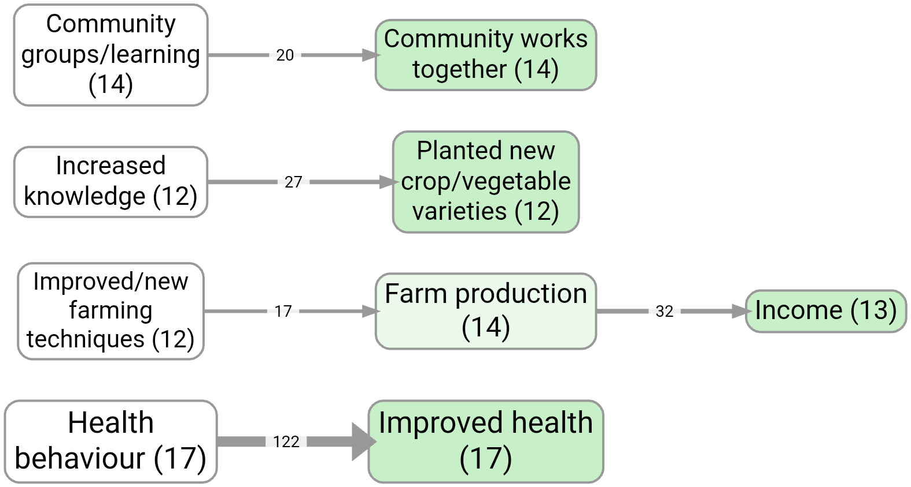
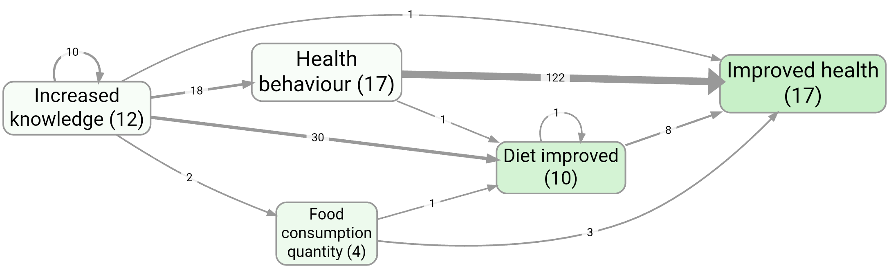
By default, setting the slider to 6 means we are selecting only links with at least 6 citations.
If you switch to “Sources”, we are selecting only links with at least 6 sources.
If you switch to “Top” we are selecting only the top 6 links by citation count, etc. The selection respects ties, so that if there are several links with the same count, either all of them or none of them will be selected.
Factor Frequency Filter #
Ideas Garden: Factor and link frequency
Same controls as Link Frequency but applies to factors instead of links.
Example bookmarks:
- Factor importance colouring (top factors)
- Top factors (no zoom): #983 vs with zoom: #984
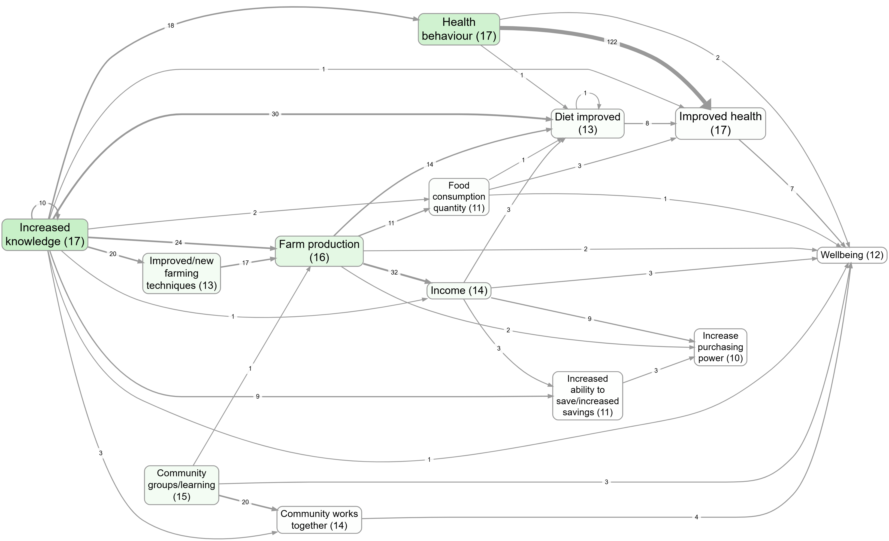
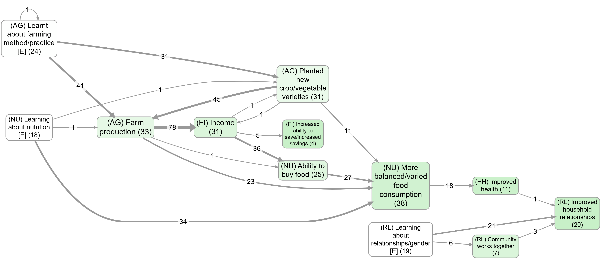
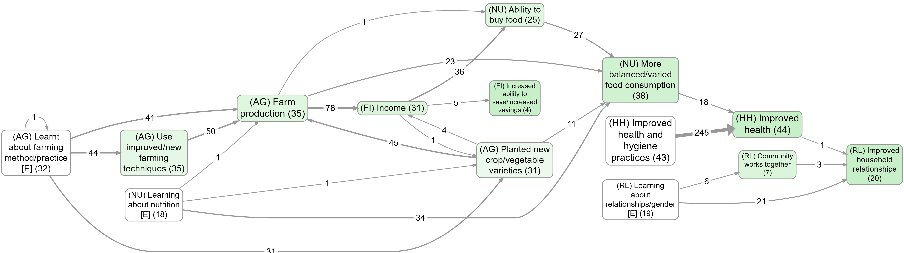
Source Groups filter #
- provides
- a prepopulated dropdown called Field with all the metadata fields plus title and projectname
- another multi-selectzie called Value. Multiple values work as OR: either/any count as a match
- a previous/next button pair to cycle through values of the selected group
- Example: Add two Source Groups filters in the pipeline to combine criteria (e.g., first filter Field = gender → Value = women, then another filter Field = region → Value = X) so you see links from women AND from region X.
Example bookmarks:
Everything Filter #
- Field dropdown with all fields in the links table
- Value selector filtered by selected field
- Navigation buttons to cycle through values
- Clear button to reset
Animate Filter #
year) and drives map animation frames from that field, respecting pipeline order.
- Field dropdown: choose the link field used for frame values.
- Cumulative toggle (default off): when on, each frame includes all values up to and including the current one.
- Refresh button: reload available fields.
Notes:
- The filter does not directly remove links during normal pipeline runs; it tags frame values at its exact pipeline position.
- Map play controls appear when an Animate filter has a selected field.
- Filter order matters: moving Animate changes which links are visible in each frame.
Factor Label Filter #
Ideas Garden: Focus or exclude factors
Widgets:
- 👉🏼 Factor selector (multi-select dropdown): choose one or more target factors.
- 👉🏼 Show All (toggle): show labels from the whole project (otherwise only labels visible at this pipeline stage).
- 👉🏼 Steps Up (radio button group 0–5): how many steps upstream (causes) to include.
- 👉🏼 Steps Down (radio button group 0–5): how many steps downstream (effects) to include.
- 👉🏼 Source tracing (toggle): keep only links that lie on a within-source path (single-source narrative constraint).
- 👉🏼 Highlight (toggle, default on): show/hide the dashed magenta border around matching factors.
- 👉🏼 Matching (radio buttons): Start / Anywhere / Exact (case-insensitive).
How to use:
- Select one or more factors.
- Set Steps Up/Down to widen or narrow the neighbourhood (for interviews, chains longer than ~4 steps are uncommon).
- (Optional) Turn on Source tracing to require paths from a single source.
- (Optional) Turn off Highlight to hide the custom highlighting.
- The map and tables update to show only links on those paths.
Example bookmarks:
- Upstream influences on wellbeing
- Focus on a factor, then compare the effect of zooming: Farm production (no zoom) vs Farm production (Zoom level 1)
- Health behaviour, without zooming
- Upstream focus (contrast): without source tracing #270 vs with source tracing #534
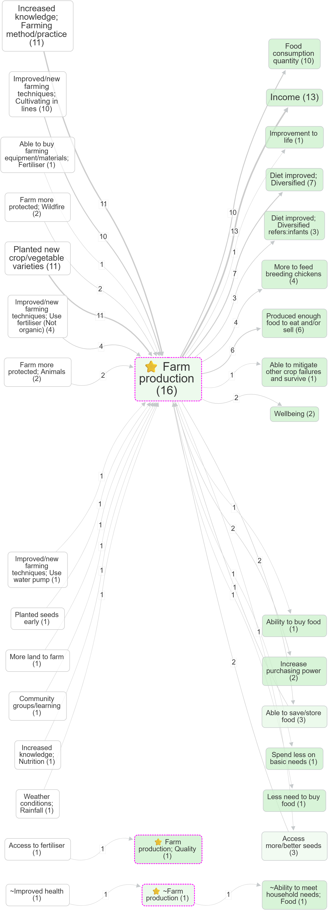
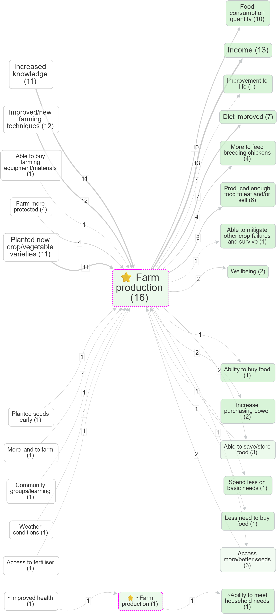
Tips:
- Order matters: This filter runs wherever you place it in the pipeline. If you have Zoom above it, then your “focused” factors may be zoomed-out labels (and the dropdown options will reflect that).
- Simplify first: Consider applying formatting/simplification filters before focusing (e.g. Zoom, Collapse, Remove Brackets).
- Collapse alternative: If you want to merge several factors into one without changing the neighbours, consider using Collapse instead of focusing.
All label/tag filters have three radio buttons below the selectize input called Match: Start (default), Anywhere or Exact to control how search terms match against labels/tags:
- Start: Match only at the beginning of text (default)
- Anywhere: Match anywhere within the text
- Exact: Match the entire text exactly
For include filters, multiple search terms are treated as OR (any match).
For exclude filters, default behavior is AND (all terms must match), unless you turn on Exclude Any.
Focused factors show with a dashed magenta border in the map (when Highlight toggle is on).
Exclude Factor Label filter #
- Factor selector for factors to exclude. By default shows only labels from links currently visible at this stage of the filter pipeline. Use the Show All toggle to display all factor labels from the entire project instead.
- Matching options: Start / Anywhere / Exact
- Exclude Any toggle (default OFF):
- OFF = exclude only when all selected texts match (AND)
- ON = exclude when any selected text matches (OR)
Tags Filter #
- Tag selector with existing link tags from current project
- Matching options: Start / Anywhere / Exact
Example bookmark:
- Displaying
#hypothetical/#doubtfultags on links: #1126
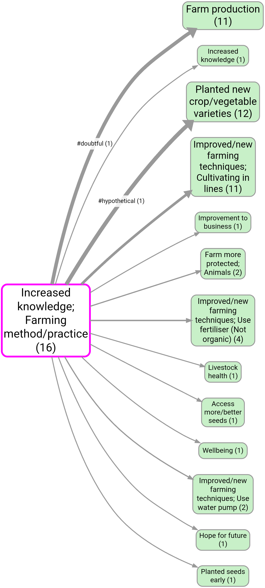
Exclude Tags filter #
- Same as Link Tag filter except exclude links containing these tags.
- Exclude Any toggle (default OFF):
- OFF = exclude only when all selected texts match (AND)
- ON = exclude when any selected text matches (OR)
Exclude self-loops Filter #
You can exclude self-loops from the maps, but that is more of a visual change. This is a real filter as part of the filter pipeline. For example, if you are using a filter like Link Frequency that might be retaining link bundles which are actually self-loops, so you might get unexpected results if you use the map setting to remove the self-loops. So this filter is a better way. It simply removes all links which are self-loops from the links table.
Path Tracing Filter #
Ideas Garden: Path tracing and source tracing
- 👉🏼 From selector (multi-select dropdown): starting factors (uses the same label source rules as other filters; see Show All).
- 👉🏼 To selector (multi-select dropdown): ending factors.
- 👉🏼 Show All (toggle): show labels from the whole project (otherwise only labels visible at this pipeline stage).
- 👉🏼 Matching (radio buttons): Start / Anywhere / Exact.
- 👉🏼 Max Steps (radio button group 1–5): maximum path length.
- 👉🏼 Source Tracing (toggle): keep only paths where every link in the path comes from the same source.
- 👉🏼 Highlight (toggle, default on): show/hide special highlighting (From factors = dashed magenta; To factors = dashed dark-yellow).
- 👉🏼 Only Indirect (toggle, default off): remove direct From→To links so you only see mediated paths (only applies when both From and To are non-empty).
Motivation:
- Use this when you want to explain how an outcome is reached (“what are the chains that lead to X?”) or explore “routes” between two concepts (e.g.
training→income). - Turn on Source Tracing when you want coherent within-source narratives rather than paths stitched together across different sources.
Example bookmark:
- Source tracing from Increased knowledge to Improved health
- Upstream influences on wellbeing; source tracing
- Contrast (order matters): source tracing + then zooming out: #1125
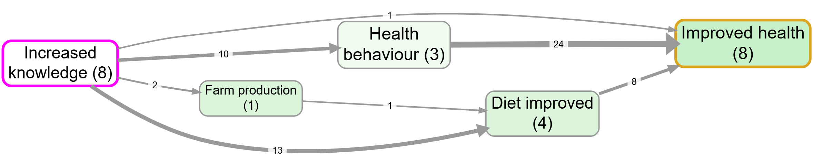
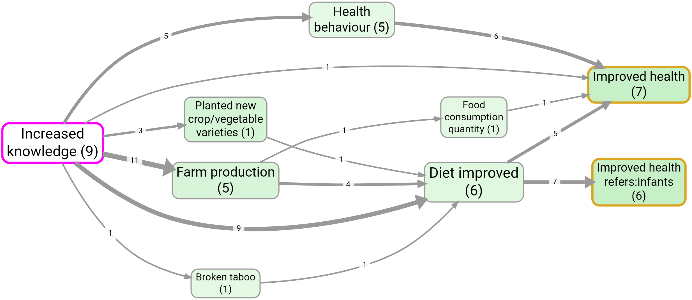
Notes:
-
Order matters: this filter runs at its position in the pipeline, so upstream transform filters (e.g. Zoom, Collapse, Combine Opposites) can change which labels you can select and which paths exist.
-
Empty selectors:
- If put nothing in From then all paths from the factors matched by the To box of up to specified length are returned.
-
If put nothing in To then all paths from the factors matched by the From box of up to specified length are returned.
-
Non-matching selectors:
- If you From or To matches nothing, no paths are returned.
Zoom Filter #
Ideas Garden: Hierarchical coding (Zoom filter)
- 👉🏼 Hierarchy convention: Use semicolons
;to express levels, e.g.Health; Mental health; Depression. (A space after;is optional.) - 👉🏼 Zoom level (radio buttons): None, 1–9.
- Examples:
- Level 1:
"foo; bar; baz"becomes"foo" - Level 2:
"foo; bar; baz"becomes"foo; bar" - If the label has ≤ N levels: it stays unchanged at zoom level N (and higher)
- Tip (hierarchy reuse): Once you have any hierarchical factor (i.e. a label containing
;), the Cause and Effect dropdown menus also include implied parent labels (e.g.Health behaviour) to make it easier to keep higher-level naming consistent. - Tip (find hierarchical factors): Search for
;in factor labels, then zoom out to level 1 for a quick “top-level only” view.
Example (hierarchy before/after zooming):
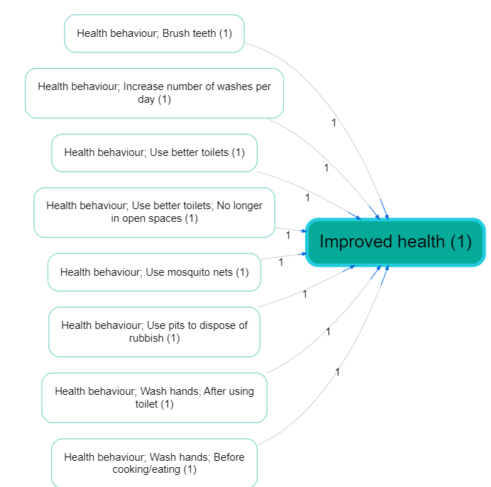
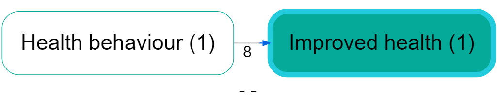
Collapse Filter #
Ideas Garden: Collapsing factor labels
Widgets:
- 👉🏼 Search terms (multi-select dropdown + free text): select existing labels or type parts of labels.
- 👉🏼 Matching (radio buttons): Start / Anywhere / Exact.
- 👉🏼 Separate (toggle): off = collapse all matches into the first search term; on = collapse into separate buckets (each match becomes the term it matched).
How it works:
- Case-insensitive: matching ignores case.
- Multiple search terms are treated as OR (any match triggers a collapse).
-
Separate = off: any matching factor becomes the first search term.
Example (Any/Anywhere): search termsFood,Diet→Diet; healthybecomesFood(becauseFoodis first). -
Separate = on: each matching factor becomes the search term it matched (so you can collapse into multiple buckets).
Example (Any/Anywhere): search termsFood,Diet→Diet; healthybecomesDiet, andFood insecuritybecomesFood.
Combine Opposites filter #
Ideas Garden: Opposites
Motivation:
- In “barebones” causal coding, you often end up with pairs like
fitand~fit(oremploymentand~employment). If the app doesn’t know they’re opposites, it’s hard to compare the “positive” story against the “negative” story, and simple searching/filtering aroundfitcan miss the~fitevidence. - Combine Opposites is a lightweight alternative to “signed edges”: you keep factors as plain text labels, but you can still analyze them as a pair without losing information about which pole was originally coded (tracked via
flipped_cause/flipped_effect).
Notes:
- Opposites, not sentiment:
~marks the opposite pole (e.g.smokingvs~smoking), not “bad”. Use it even when there’s no valence. - Order matters: because this is a transform filter, its position in the pipeline affects downstream filters and which labels appear in dropdowns.
- Map colouring override: when active, arrowhead colouring switches to Combine‑Opposites colouring (flipped status / flipped share), so the Map Formatting Link Colour setting does not apply in the usual way.
Example bookmarks (contrast):
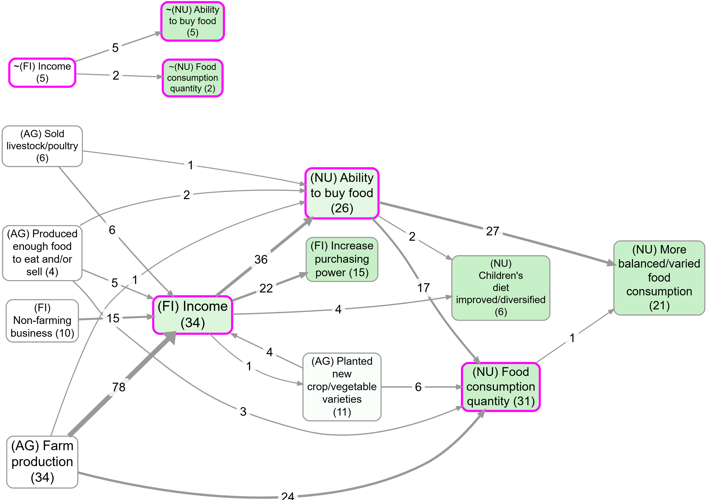

Toggle – Turn the filter on/off.
Opposites mode toggles (you can use either or both):
- ~ prefix (e.g.
~ foo) – Treatfooand~ fooas opposites (no brackets or numbers). - Works with hierarchies too: we flip every
;-separated component when comparing opposites. Example:~Healthy habits; smokingis the opposite ofHealthy habits; ~smoking. Important: this “flip every hierarchy component” behavior applies only to the ~ prefix mode (not to the numeric tag mode below). ~foois always rewritten tofoo(even iffoodoes not appear elsewhere in the current factor list).- [~N] tags – Treat numeric pairs like
Foo [99]andBar [~99]as opposites. (Square brackets are optional:Foo 99/Bar ~99.)
More details on [~N] tags
Labels can be written in pairs like:
Foo [99]Bar [~99]
where Bar represents the opposite of Foo. The square brackets are optional - you can use Foo 99 and Bar ~99 - but brackets make it easier to remove tags later using the Remove brackets filter.
If there are any such pairs, with matching integers, and the filter is switched on:
rewrite any Bar [~99] filters as Foo [99] and add new columns...
flipped_causecolumn tracks which causes were flippedflipped_effectcolumn tracks which effects were flipped
... to the current augmented links table, so that if the label has been flipped, the value is True and otherwise False.
Strip tags from labels (default: on) – When enabled, removes [N] and [~N] tag patterns from labels after combining opposites. This keeps labels clean while preserving the tracking information in the flipped_cause and flipped_effect columns.
Bundling strategy (Separate vs Together):
- Separate (default) – Treat each flipped/unflipped variant as its own bundle (so counts are plain numbers per bundle). This means that you may often see two or even more links between two factors.
- Together – Put all variants into a single bundle (one link between two factors). Optionally show an embellished per‑variant breakdown inside the link label (see “Map legend” below).
Link labels (Simple vs Detailed):
- Simple – Show only the total source/citation count (Together mode only).
- Detailed – Show the per‑variant breakdown using the unicode markers (Together mode only).
Map legend (what you’ll see on the map) — 4 variants
Notes:
- The “Link labels” setting only matters when Bundling is Together (it is disabled/ignored in Separate).
- “Count” below means whatever your map is currently showing for link labels (e.g. Sources or Citations).
- Colours: Separate = per-end flipped status (tail=cause, head=effect; blue=no, red=yes). Together = average flipped share (tail=cause, head=effect; blue→red).
- Separate mode tip: you can set Link colour (Map Formatting) to grey so the default (unflipped) links match maps without combined opposites better.
1) Separate + Simple
- In the map, you’ll often see multiple parallel links between the same two factors (one per variant).
- Each link label is a plain count for that variant.
- Variants correspond to
flipped_cause/flipped_effect: foo >--> bar(unflipped/unflipped)foo >-F> bar(unflipped/flipped)foo >F-> bar(flipped/unflipped)foo >FF> bar(flipped/flipped)
You'll see this special >F-> notation in the Bundle column of the Links Table
2) Separate + Detailed
- Same as Separate + Simple (Link labels detail does not apply in Separate mode).
3) Together + Simple
- You’ll see a single link between the two factors.
- The link label is the total count across all variants (no breakdown).
4) Together + Detailed
- You’ll see a single link between the two factors.
- The link label shows a per‑variant breakdown using these unicode markers:
▔n= neither flipped (--)╲n= effect flipped (-F)╱n= cause flipped (F-)▁n= both flipped (FF)- Example:
▔5 ╲2 ╱1means 5--, 2-F, 1F-(zero variants are omitted).
Label by Group #
Controls:
- Field - Dropdown of available fields from your filtered data (typically shows custom fields like tribe ID)
- Counts - Choose whether to count Sources (unique participants/documents) or Citations (links)
- Display mode - Choose how to show the data:
- Tally - Show counts for each value (e.g., "T1:4 T2:3")
- Percentage - Show what % of each value's total links appear in this bundle (e.g., "T1:34% T2:22%")
- Chi-square - Show bundle size, then which values are significantly over-represented (⬆) or under-represented (⬇) (e.g., "45 (T1⬆ T3⬇)")
- Chi-square (with counts) - Also show the observed count for each significant value (e.g., "45 (T1 4⬆, T3 3⬇)")
- Chi-square (with counts/totals) - Also show observed/total for each significant value (e.g., "45 (T1 4/5⬆, T3 3/6⬇)")
- Ordinal correction (numeric groups) - When ON (and group values are numeric-like, including strings like
"12 foobar"), Chi-square modes use an ordinal trend test and show only the overall total plus (⬆) or (⬇) (no per-group totals). - Sig level - Significance threshold for Chi-square / Ordinal trend (default p < .05).
⬆ / ⬇ meaning (only in Chi-square modes):
- Normal Chi-square: ⬆ over-represented vs expected; ⬇ under-represented.
- Ordinal correction ON: ⬆ increasing over numeric groups; ⬇ decreasing.
To use:
- Add the Label by Group to your pipeline
- Select a field (e.g.,
s_Tribes_5after running Tribes and saving to Sources) - Choose a display mode
- In Map Formatting, set Link Labels to "Label by Group"
Example use cases:
- After Tribes: Show which tribes contribute to each connection (T1:5 T2:2 T3:1)
- Significance testing: Identify connections where certain tribes are surprisingly over/under-represented (T1↑ T3↓)
- Custom attributes: Display any custom field you've added to your data
Example bookmark:
Remove Brackets Filter #
- Two switches: Round () and Square [] (both off by default)
- Removes all text within the selected bracket type(s)
Soft Relabel Filter #
- Old factor labels listed on the left
- New factor labels editable, listed on the right
- Load labels button when pressed, adds into the Old labels list any current factor labels (in links as currently filtered) which are not yet listed in the Old labels list and adds the same Old label to the New column as default.
- Clear button to clear the New fields
- Clear ALL button to clear all rows
Effect: all factors exactly matching any of the labels in the Old list are relabelled with the corresponding labels from the New list. factors not listed are not relabelled but preserved.
Many use cases:
- temporarily merge multiple factors into one
- you are using magnets and you can't really use the formulation you want because you want to maximise similarity with existing labels
- eg you are using "floods" as a magnet but you really want it as a hierarchical factor like "environmental problems; floods" but you can t use that as a magnet.
Keyboard shortcuts (Win/Linux ⇄ macOS):
- Tab / Shift+Tab: move focus down/up between NEW cells
- Arrow Up/Down: move focus up/down between NEW cells
- Alt+Arrow Up/Down (mac: Option+Arrow): move the current row up/down
- Ctrl+Arrow Up/Down (mac: Cmd+Arrow): move the current row up/down
- Delete current row:
- Shift+Delete (mac: Shift+Fn+Backspace) or
- Ctrl+Shift+K (mac: Cmd+Shift+K)
Potentially, one NEW label might have multiple OLD labels.
Temporary Factor Labels Filter #
- Pick a field for Map to cause and/or Map to effect.
- Leave either dropdown on Keep current ... to keep the original
cause/effect. - Typical use: map
cause_temp/effect_tempcreated by AI recoding so you can compare alternative label sets without overwriting original labels. - Downstream calculations (for example bundles, source counts, citation counts, factor frequencies) use the temporary mapped
cause/effectvalues. - This changes only the live pipeline output; your stored source links are unchanged.
- Related: AI Answers → Sources, Links, and Factors subtabs.
Soft Recode Plus filter #
Requires AI subscription
Example bookmarks:
Controls:#
Create Suggestions for Magnets#
(collapsed by default): Optional. Ask AI to propose clear names from your current labels. Insert adds them to your magnets box to review/edit.
- Number of clusters – Choose how many groups to find for AI suggestions.
- Representatives per cluster – How many example labels the AI sees for each cluster (8–20; default 8). Consider choosing more than 8 if you want to split clusters into positive/negative variants.
- Labelling prompt - With the usual buttons to save and recall previous prompts
- Insert
Main panel#
- NEW: Only unmatched – A new toggle which appears right at the top, before the Create Suggestions subpanel. default off.
- NEW: Apply to link tags – When enabled, Soft Recode Plus processes link tags (instead of factor labels). Tags are split on commas, trimmed, and then matched to magnets just like labels. Reserved tags like
#plain_codingare never recoded. - Magnets – One magnet per line. Saved per project. Use Prev/Next to browse recent sets.
- Similarity slider – The raw labels are dropped if they are not at least this similar to at least one cluster.
- Drop unmatched – If on, remove links whose labels don't match any magnet. If off, keep them as they are. (When Apply to link tags is on, this drops unmatched tags, not links.)
- Save – Save magnets and apply the recode.
- Remove hierarchy – Strip any text before the final semicolon
- Clear / Prev / Next – Manage saved sets.
- Recycle weakest magnets: – A slider starting at 0 , default is 0. If the slider is n >0, then we look at the cluster assignenments which would have been returned and find the n clusters which we are going to recycle. Reassign them to their nearest cluster, providing the similarity is still better than the similarity cutoff. This way we don't lose factors / links which are otherwise assigned to smaller clusters which may get excluded later on in the filter pipeline. When it is on zero, it makes no difference and we just use the solution based only on the magnets, similarity, and remove_hierarchy. The maximum value changes to match the total number of magnets.
If you have say 50 magnets but later apply a filter which only shows 5 factors, in that kind of case it can be nice to apply this slider, to reassign the links for the 45 factors which do not show, to the ones that do show, if they fit. It is not automatic because it depends on you looking to see how many factors are left in the FINAL output e.g. maps. It should work whether you drop unmatched or keep them.
Recoded columns#
When you use Soft Recode Plus, the Links and Factors tables show special columns that track which labels have been recoded:
- Links table: Shows
_recoded_causeand_recoded_effectcolumns (✓ for recoded, ✗ for not recoded) - Links table (tags mode): Shows
_recoded_tagscolumn (✓ if any tag was recoded at current similarity cutoff) - Factors table: Shows
_recodedcolumn (✓ if the factor appears at least once as recoded, ✗ otherwise) - These columns only appear when Soft Recode Plus is active in your filter pipeline
- You can filter by these columns using the True/False dropdowns in the table headers
These columns track recoding from any filter that transforms labels: Soft Recode Plus, Zoom, Collapse, Remove Brackets, Soft Relabel, Cluster, Hierarchical Cluster, and Combine Opposites.
Process only unmatched NEW#
the point of this is: what if I apply some (maybe standard) magnetisation and matches plenty of factors but there might be some important material left unmatched, not just noise. so i can use a PAIR of these filters. in the first one, I leave OFF its Discard Unmatched toggle and in the second filter switch ON its Only Unmatched filter. (if there is no preceding SRP filter with Discard Unmatched=OFF, this second SRP filter does nothing).
So now,
- the Create Suggestions (if used) optionally processes ONLY the UNMATCHED factor labels
- the magnetisation (if labels are non-empty) works only on the unmatched factor labels.
- the actual output of the second filter is now the union of both soft-recode processes, i.e. the original matches from the first and the new matches of the previously discarded material from the second.
- the Discard Unmatched on this second filter works as usual: if it is OFF, then we also return all the still-unmatched labels.
Meaning Space (2‑D projection of embeddings)#
Go to the map formatting and select Layout → Meaning Space to see a 2‑D scatter plot of your factor-label embeddings (projected down to 2 dimensions).
- Magnets are shown with labels; raw factor labels are dots.
- Colour indicates the magnet group; magnet dot size represents group size.
- Meaning Space uses the Similarity and Drop unmatched settings from your most recent Soft Recode Plus filter:
- If Drop unmatched = ON: unmatched raw labels are not shown (dot count shrinks as you increase Similarity).
- If Drop unmatched = OFF: unmatched raw labels are still shown, but they render in grey.
- You can pan (drag) and zoom (mouse wheel and zoom controls).
- Double-click on an empty part of the map to zoom in at that point.
- Tooltips on dots show the original (raw) labels and the magnet label.
Motivation for Remove Hierarchy#
"Remove hierarchy", default off. if on, strip any text before a final semi-colon, if no semi-colon, do not change the text.
something; another thing
is treated same as
another thing
.... but it continues to be treated as "something; another thing" in the rest of the filter pipeline.
Quick workflow:
- (Optional) Open Create Suggestions for Magnets panel → set Number of clusters and use Insert to get AI suggestions.
- Use these suggestions and/or edit them, paste or type your own magnets (one per line).
-
Click Save.
-
Clusters your current labels (factors as currently filtered), ranks typical examples, and asks AI to suggest clear names.
- Returns suggested names into the magnets box; you can edit them before Save.
See tips on using the history to reuse both your labelling prompt and magnet sets.
Motivation for "recycle weakest magnets": suppose you create 20 magnets, and then apply more filters like say a link frequency filter so that you end up with say only 5 factors. If you then remove those factors from the magnets list which are not included in the final output, you will usually increase the coverage of your map (re-assigning raw labels which fit best with one of the "lost" labels but still fit well with one of the "surviving" labels). This is what the Recycle slider does: it recycles the specified number of smaller magnets and reassigns them to the larger magnets. So in the example, if you start off with 20 magnets but your final map only shows 5, try recycling say 10 or even 15 of the missing factors.
Note that Recycle Weakest Magnets is applied BEFORE Drop Unmatched.
Cluster filter #
Requires AI subscription
- Enable toggle (starts disabled)
- Number of clusters (1-9)
- Server-side processing using
cluster_factors_pgvectordatabase function - Uses k-means clustering on factor embeddings
- Labels clusters with numeric IDs
Auto Recode filter #
Motivation#
Making sense of hundreds or thousands of factor labels is hard.
You might use something like soft Recode Plus, but often you'll ask for 20 clusters to cover a wide range of meanings. Then after filtering out insignificant data, you end up with only 7 clusters — losing coverage. Ideally you'd go back and recreate just 7 clusters, but that gives different results. Frustrating!
The point of this Auto Recode filter: have your cake and eat it. Ask for an foldable/unfoldable hierarchical solution. When you move the slider to 15, you get the best solution for 15 clusters. Slide it to 3, you instantly get the best solution for 3 clusters.
Controls:#
- Enable toggle (starts disabled)
- Balance (0..1): 0 = prefer more distinct clusters; 1 = prefer more even sizes. Changing this can be slow because the tree has to be rebuilt
- Number of clusters (K): 2–50. Unfolds the returned tree locally to K. This is fast unless you increase beyond 20.
- Similarity ≥: prune locally by similarity to the centre of each cluster.
NEW: AI labelling prompt with history controls. Use this to suggest clearer names for each cluster:
- Saved in the prompts table as type
hierarchical_label(shared across projects; history shows current first then others). - A Save button stores your prompt; it also auto-saves on blur and after the first tree build.
- When you raise K (unfold deeper), we call AI in parallel only for the two new child clusters introduced by each applied split, using up to 8 representative labels per child as context. For K clusters this is K−1 requests. Folding to fewer clusters does not call AI; existing AI labels or medoid representatives are used.
- If the prompt is blank, we show the medoid representatives for each cluster.
- If earlier splits already have AI labels (K > 1), we include a reference list of those labels so new labels avoid overlapping meanings.
NEW: Seed labels (optional) with history and strength:
- Provide up to K seed labels (one per line). Seeds softly influence split formation but are not included in the final tree (not nodes, not representatives).
- Saved in the prompts table as type
hierarchical_seedswith standard history controls (Prev/Next/Dropdown/Save). - Seed strength (0..1) adjusts influence; 0 is a no‑op (identical to no seeds). Changing strength or seeds triggers a single backend rebuild (like Balance). Changing K or Similarity does not re‑call the backend.
How to use (quick):
- Add the filter and enable it. We build a quick draft tree from the labels you see now (respecting any filters above, like Zoom).
- Set Balance if you want more equal‑sized groups; the first build may take a moment on large projects (one server call).
- Use K to choose how many clusters to show. Changing K is instant (no extra server calls).
- Use Similarity ≥ to drop weak matches. If either side of a link isn't matched, that link is hidden.
Notes:
- On very large projects, we automatically sample a representative set to build the tree, then assign the rest to the nearest cluster. This keeps things responsive while preserving the overall picture.
- 💡Tip: changing the number of factors should be instant if they are less than 20. Setting more than 20 can be slow. If you are going to want more than 20, set this number initially to the maximum number you are likely to want. You can then easily reduce it. Gradually decreasing the number is fine, but gradually increasing it will be very slow.
A good prompt looks something like this:
This is a list of many raw labels grouped into two different clusters, with their cluster IDs, together with a reference list of other labels. Return a list of two new labels, one for each cluster ID. Each label should capture the meaning of the whole cluster, using similar language to the original raw labels, but in such a way that the labels you create are distinct from one another in meaning. Try not to be too generic, try to be as concrete as you can. Do NOT provide labels which include causal ideas, like "X through Y" or "X leading to Y" or "X results in Y" or "X improves Y" etc. Equally, don't include conjunctions in the title like "X and Y". The meaning of the labels you give me should ideally not overlap in meaning with one another or with the labels in the reference list.
Optimized Cluster filter #
⚠️ DEPRECATED Requires AI subscription
Controls:
- Max Centroids (n) - Maximum number of optimal centroids to find (2-50)
- Similarity ≥ - Minimum similarity threshold for grouping labels (0-1)
- Timeout (s) - Optimization time limit in seconds (5-60)
- Drop unmatched - Remove labels that don't meet similarity threshold
- Real-time status - Shows optimization progress and results
How it works:
- Extracts all unique labels from your current data (1K-30K labels supported)
- Runs iterative optimization with multiple strategies (random, frequency-based, diverse selection)
- Uses hill-climbing optimization to find the best possible centroids
- Shows coverage percentage and timing information
- Returns recoded links table with optimal centroid labels
Optimization Strategies:
- Random selection - Tests random starting points
- Frequency-based - Prioritizes most connected labels
- Diverse selection - Maximizes distance between centroids
- Hybrid approach - Combines best-so-far with random exploration
Performance Features:
- Sampling strategy for datasets >1000 labels (uses representative subset)
- Early termination when excellent coverage (≥95%) is achieved
- Configurable timeout prevents infinite optimization loops
- Multiple iterations with different starting strategies for robustness
- Smart caching - Embeddings cached separately from algorithm parameters for fast parameter changes
- Quote-safe processing - Handles labels with quotes, apostrophes, and special characters
Technical Implementation:
- Client-side optimization using cosine similarity on embeddings
- Hill-climbing algorithm with local search improvements
- Genuine optimization problem solving (not just k-means clustering)
- Real-time UI feedback showing progress and final results
- Handles massive datasets efficiently through smart sampling
- Original label preservation - Stores original labels in
_recodedmetadata for map display - Chain compatibility - Works seamlessly with zoom filter and other transformations
Soft Recode Integration:
- Optimized cluster results available as magnet source in Soft Recode filter
- AI can generate meaningful labels for optimal centroids
- Seamless workflow from optimization to AI-powered naming
This filter implements the optimization challenge described in the technical documentation: finding optimal centroids that maximize label coverage within similarity constraints.
Tribes filter #
Requires Pro subscription
Tribes button in the Links tab (next to Create/Filter links) opens a modal. Operates on the currently filtered links and saves results to a custom source column. Column names are coordinated with cluster count: 5 tribes → Tribes_5.
Modal controls:
- Extra fields - Optional multi-select (s_ source columns first, then others). Source-level (s_) count 1 per source; link-level per link. Δs = s_with_all − s_without_field; negative = removing that field improves silhouette
- Preview - Table of sources per tribe, p-value (chi-square), and silhouette for k=2–6 (Refresh preview to update)
- Clusters - Select 2, 3, 4, 5, or 6
- Save to Sources - Runs clustering for selected k and writes tribe ID (T1, T2, …) to column
Tribes_<k>
How it works: Builds sentiment-aware cause×effect matrices per source, TF-IDF weights them, clusters with k-means, and writes to sources.metadata.custom_columns[col]. Enriched links get s_<col> (e.g. s_Tribes_4) for use in Source Groups, Label by Group, and the Statistics panel.
- The report’s Counts (Report) toggle controls whether those tables use Sources (unique
source_id) or Citations (links).